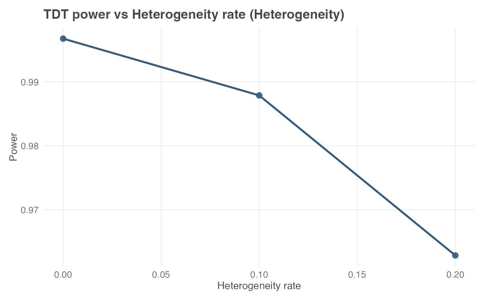

Sweeps one x-axis parameter and repeatedly calls
tdt_power() to plot Transmission
Disequilibrium Test (TDT) power. The wrapper supports both
input_mode = "model_based" and input_mode = "model_free".
Arguments
- x_var
Character. Parameter to vary on the x-axis.
- x_values
Numeric vector of x-axis values.
- scenario
One of
"auto","no_error","misclassification", or"heterogeneity".- input_mode
One of
"model_based"or"model_free".- title
Optional character title override.
- x_label
Optional x-axis label override.
- y_label
Optional y-axis label override.
- return_data
Logical. If TRUE, return the data frame instead of a ggplot.
- ...
Arguments passed to
tdt_power().
Details
scenario selects the component of the canonical TDT backend
output: "no_error", "misclassification", or
"heterogeneity". With scenario = "auto", the wrapper chooses
misclassification for x_var = "misclass_rate" or
"pheno_error_multiplier", heterogeneity for x_var =
"heter_rate" or "locus_het_rate", and no error otherwise. This
wrapper does not include a compare-scenarios mode.
With input_mode = "model_based" (the default), this wrapper's
x_var choices and output are numerically identical to sweeping
tdt_power() directly. "pd", "prev",
"R1", "R2", and "delta_prime" are only valid
x_var choices in this mode.
With input_mode = "model_free", sweep "ET" or "ENT"
instead (or any of the shared "misclass_rate", "heter_rate",
"locus_het_rate", or "pheno_error_multiplier" variables). A
resolved scenario = "heterogeneity" requires a fixed pd
argument, and scenario = "misclassification" requires fixed
pd and prev arguments, because the conditional backend needs
them to apply heter_rate/misclass_rate to the supplied
ET/ENT. Unlike tdt_power()'s
own default of 0.01, heter_rate and misclass_rate
default to 0 here in input_mode = "model_free" (unless fixed
via ... or swept via x_var), so scenario = "no_error"
always works without pd/prev.
All arguments passed through ... remain fixed while x_var
is swept. The x-axis contains x_values; the y-axis is TDT power for
the resolved scenario. When x_var = "heter_rate", the axis is the
heterogeneous trio fraction \(1-\pi\).
Examples
plot_tdt_power(
x_var = "heter_rate",
x_values = c(0, 0.1, 0.2),
scenario = "heterogeneity",
input_mode = "model_based",
N = 600,
pd = 0.30,
prev = 0.05,
R1 = 1.5,
R2 = 2.25,
alpha = 0.05,
delta_prime = 1
)
